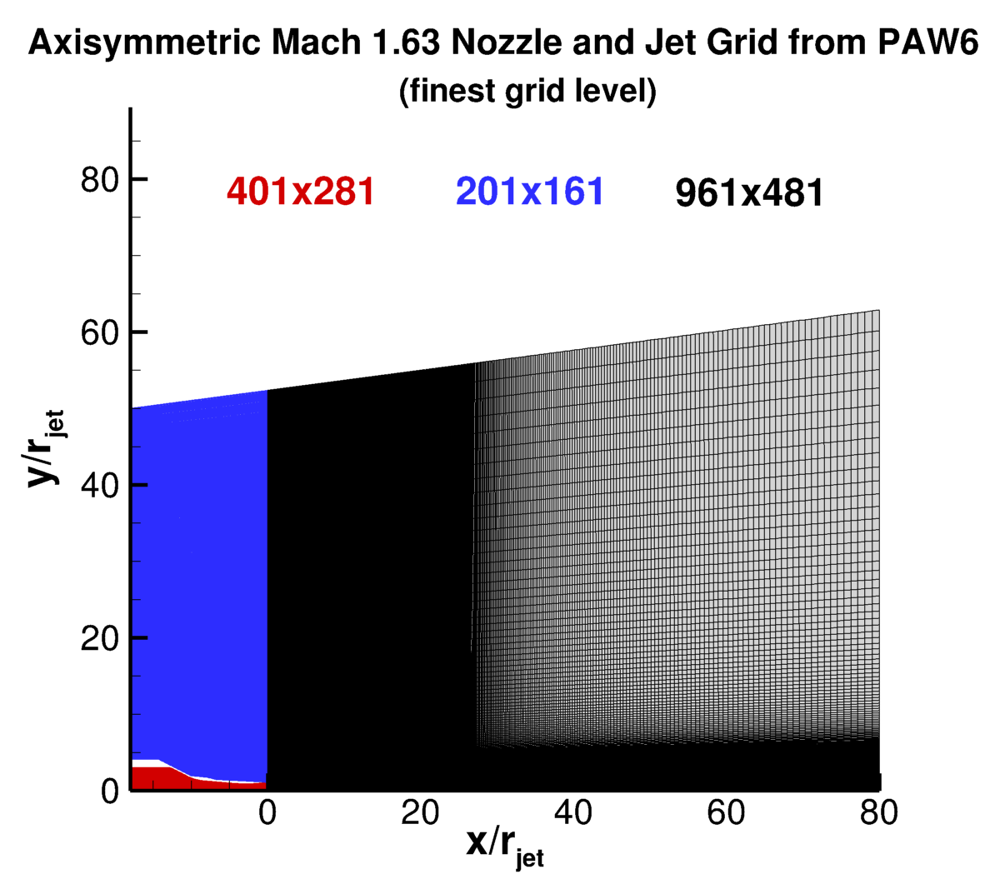

Public Access (formerly Langley Research Center)Turbulence Modeling Resource |
 This page under construction... Come back later!
This page under construction... Come back later!
Return to: Heated Mach 1.63 Axisymmetric Jet Case Intro Page
Return to: Turbulence Modeling Resource Home Page
Grids - Mach 1.63 Axisymmetric Jet
Note that these grids are identical for the 3 cases of
Temperature-Matched Mach 1.63 Axisymmetric Jet,
Heated Mach 1.63 Axisymmetric Jet, and
Off-Design Mach 1.63 Axisymmetric Jet.
A series of 4 nested grids
are provided. Each is made up of 3 zones. Each grid has been scaled relative to the jet
exit radius (i.e., rjet=1).
All grid files have been gzipped.
Each coarser grid is exactly every-other-point
of the next finer grid, ranging from the finest 401x281; 201x161; 961x481
to the coarsest 51x36; 26x21; 121x61 grid.
The following figure shows the finest grid.
Note that the jet exit is at x=0, at the boundary of zones 1 and 3.

Note: be sure to use double precision when reading the grids!
STRUCTURED VERSIONS OF
GRIDS
PLOT3D Files
The structured PLOT3D grids are given in two different ways, as 2-D grids (x-y plane) or as 3-D
axisymmetric grids (two planes rotated through 1 deg from each other.
You may use whichever is more convenient for your particular
application. If you get the 2-D grid version, then you must create an axisymmetric grid from
it on your own.
Format for the structured 2D grids is PLOT3D-type, formatted, MG, 2D (nbl=1) - note that you
must use double precision when reading! :
read(2,*) nbl
read(2,*) (idim(n),jdim(n),n=1,nbl)
do n=1,nbl
read(2,*) ((x(i,j,n),i=1,idim(n)),j=1,jdim(n)),
+ ((y(i,j,n),i=1,idim(n)),j=1,jdim(n))
enddo
Download the 2-D version of the grids in PLOT3D format here:
Format for the 2-rotated-plane structured 3D grid is PLOT3D-type, formatted, MG, 3D (nbl=1, and idim in this case is 2) - note that you must use double precision when reading! :
read(2,*) nbl
read(2,*) (idim(n),jdim(n),kdim(n),n=1,nbl)
do n=1,nbl
read(2,*) (((x(i,j,k,n),i=1,idim(n)),j=1,jdim(n)),k=1,kdim(n)),
+ (((y(i,j,k,n),i=1,idim(n)),j=1,jdim(n)),k=1,kdim(n)),
+ (((z(i,j,k,n),i=1,idim(n)),j=1,jdim(n)),k=1,kdim(n))
enddo
Download the 3-D version of the grids in PLOT3D format here:
If desired, example Neutral Map Files associated with 3-D version of the grids are given here (these files specify grid indices associated with each boundary condition - see The Neutral Map File):
UNSTRUCTURED VERSIONS OF GRIDS
AFLR3 Files
The unstructured versions of the same grids are all given as AFLR3 (UGRID) files. Download the unstructured AFLR3 grids (gzipped) as (mostly) 3-D hexahedra (quadrilaterals in x-z plane) here:
Return to: Heated Mach 1.63 Axisymmetric Jet Case Intro Page
Return to: Turbulence Modeling Resource Home Page
Recent significant updates:
None
Page Curators: Christopher Rumsey,
Ethan Vogel,
Clark Pederson
Last Updated: 04/24/2024